Zihang (Henry) Yang
城市规划硕士（Smart cities）
宾夕法尼亚大学设计学院（University of Pennsylvania School of Design）

理解城市环境与野生动物活动的关系
城市规划硕士（Smart cities）
宾夕法尼亚大学设计学院（University of Pennsylvania School of Design）

城市规划硕士（Smart cities）
宾夕法尼亚大学设计学院（University of Pennsylvania School of Design）

城市空间分析与地理空间数据科学助理教授
宾夕法尼亚大学设计学院（University of Pennsylvania School of Design）
野生动物生态学家
One Health in Action 副主任
宾夕法尼亚大学兽医学院（University of Pennsylvania School of Veterinary Medicine）
Wildlife Futures Program 定量疾病生态学家
病理生物学系（Department of Pathobiology）
宾夕法尼亚大学兽医学院（University of Pennsylvania School of Veterinary Medicine）

UWIN 的使命是与不同城市的合作伙伴协作，复用研究方法并收集可比数据，以支持在人类持续城市化的地球上实现人与野生动物共存。

本项目属于城市自然可达性倡议（Accessing Urban Nature Initiative, AUNI）。AUNI 于 2025 年加入城市野生动物信息网络（Urban Wildlife Information Network, UWIN）成为合作站点。UWIN 是 2017 年成立的国际协作网络，最初用于更好地理解芝加哥的城市野生动物生态，现已扩展到 80 多个合作站点，为跨城市比较城市野生动物生态模式提供了条件。
该网络的重要优势之一是采用共享研究协议，可支持更标准化的数据采集并提升跨站点结果可比性；同时，各合作项目也能针对本地城市野生动物格局开展深入研究。
从土地利用变化视角看，城市化本质上是人类主导的空间重构过程。它通过改造自然环境来容纳居住、生产、贸易等社会经济活动。其核心机制是将植被覆盖地表转化为硬化建成地表，并由此引发一系列物理环境的系统性变化。[1]
对野生动物而言，这一过程具有多维影响：城市热岛、噪声干扰与夜间光污染显著改变其生境；同时，土地利用转变导致栖息地丧失与破碎化[2]。此外，工业排放与全球贸易等人类活动会加剧生态系统扰动，带来外来入侵物种等问题，进一步重塑城市生态系统结构。
环境变化：城市热、夜间照明、噪声……

栖息地丧失与破碎化

水体与土壤系统中的工业污染物
城市化的一个显著后果是生物多样性下降。[3] 随着物理环境改变，不适应城市环境的物种在自然选择下减少。覆盖 54 种城市鸟类与 110 种城市植物的全球研究显示，城市中本地鸟类和本地植物的“物种密度”仅约为非城市参照值的 8% 与 25%；相比气候和地理因素，城市化特征（如土地覆盖与城市年龄）更能解释这类损失。[4]
此外，破碎且不连续的城市绿地，以及大面积不透水地表，会限制动物迁移并降低基因交流。除遗传隔离外，迁移受限还会在残余生境中加剧竞争，尤其是在植物与资源多样性本就受限的区域。这可能导致城市种群内部遗传多样性下降，并加大种群间遗传分化，特别是对迁移能力有限的物种而言更为明显。[5]
一项研究发现，在人类活动足迹较高区域，哺乳动物平均移动距离仅为低足迹区域的约二分之一到三分之一，这意味着觅食、扩散和种子传播等生态功能可能出现系统性下降。尽管城市化并非唯一解释变量，但基础设施和人类活动强度是关键因素。[6]
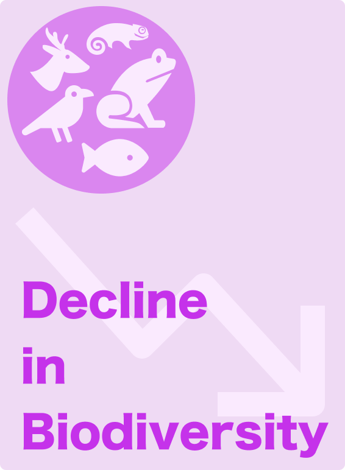

图片来源于 Unsplash， 使用 Unsplash License.
城市化对生物多样性的影响广泛且涉及多个物种，但影响方式与强度在不同物种之间存在明显差异。[7]
例如，鸟类会面临栖息地丧失、玻璃撞击风险，以及夜间照明与噪声的叠加影响[8,9]；但部分耐城市化鸟类，尤其是乌鸦、鸽子等广适性物种，也可通过利用人类来源食物、人工巢位和建成环境资源而受益。[10]
对哺乳动物而言，道路与建筑形成物理屏障，缩小其活动范围、降低连通性并限制基因流动。[11] 但像浣熊这类广适性哺乳动物，凭借广泛食性、行为灵活性及利用垃圾和宠物食物等人类补给的能力，仍可在城市持续生存甚至繁盛。[12]
两栖动物对湿度、繁殖水体和生境连通性高度敏感[13]；城市河流污染与排水系统改造可能导致繁殖成功率下降，并提高局地灭绝风险。[14]

几乎所有城市动物都会受到城市热影响。热岛效应使城市气温通常比周边郊区高约 1–3°C，增温影响平均可扩展 4–12 km。[15,16] 这会改变生物体的耐热能力、日活动节律与繁殖成功率。

城市种群可能通过进化响应提升耐热性，但这通常伴随耐寒性下降或温度耐受范围变窄。[17]
与森林种群相比，城市蜥蜴可承受更高环境温度，且上限耐热阈值更高；但其低温耐受能力下降，最适温度范围也趋于收窄。[18]
城市热还会改变动物行为与活动模式。[19] 热暴露增加会促使动物通过调整觅食时段、增强夜行性、更多停留在阴影处/近水区/地下等方式适应环境。[20] 这将改变动物与资源、同种个体或捕食者之间的相遇概率，从而引发食物网结构变化。

极端高温峰值会影响动物繁殖阶段的存活率。在胚胎与幼体阶段，短时热峰可能超过生理阈值并导致存活率下降。对爬行动物而言，较高孵化温度可加快发育，但过高温度会造成死亡。[21] 城市热岛可能形成异常温暖的巢位条件，使其在平均与极端温度上都不同于邻近自然区域，从而影响动物生长。
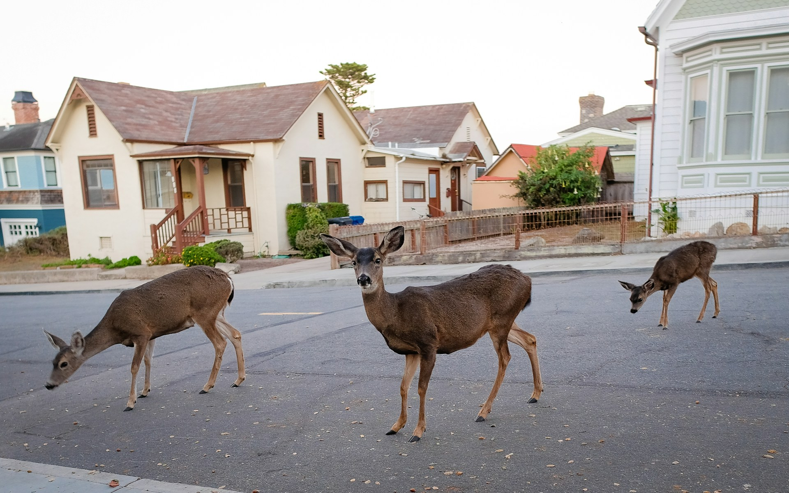
图片来源于 Unsplash，使用 Unsplash License.
根据联合国经济和社会事务部（United Nations Department of Economic and Social Affairs）预测，全球城市人口占比将从 2021 年的 56% 上升至 2050 年的 68%。[22] 城市化将影响全球越来越多的野生动物物种。城市野生动物研究不仅有助于理解物种如何在高人类干扰环境中生存与适应，也为城市生物多样性保护提供科学依据。由于城市环境高度复杂，其生态过程常不同于实验室或自然场景观察结果，因此在真实城市语境中开展研究尤为关键。[5]
城市规划可通过建设绿地系统与生态廊道，成为缓解栖息地破碎化的关键干预手段。通过建立连续的绿色廊道网络并提升绿地斑块连通性，可为动物提供迁徙通道与栖息空间，进而增强基因交流与种群稳定性。此外，维持生物多样性有助于调节害虫种群并减少对化学防治的依赖，从而支撑更稳定、更具韧性的生态系统，并形成持续维护生物多样性的正向循环。[5]
理解城市化梯度如何影响野生动物活动
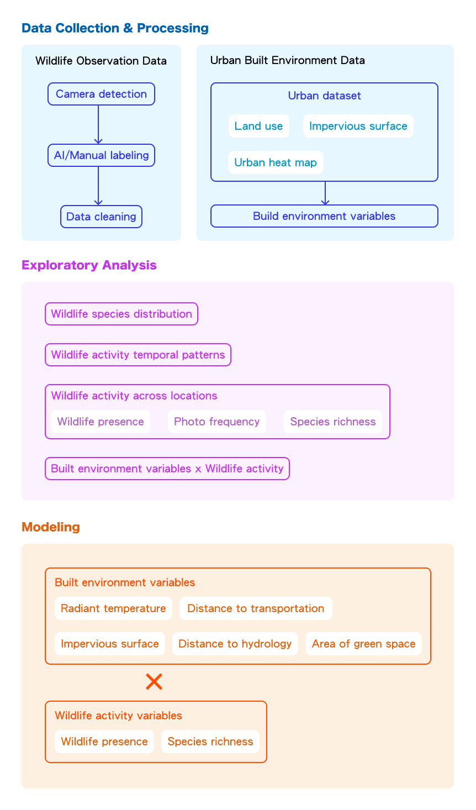
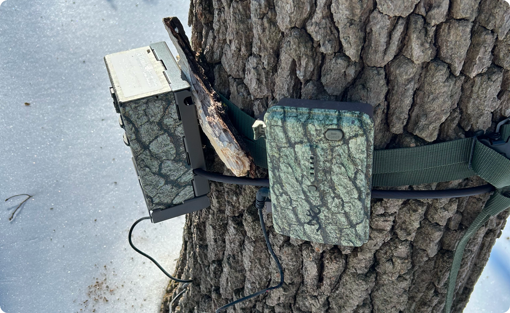
当检测到运动时，运动触发相机会自动记录带有时间戳、温度与气压信息的图像，使我们能够长期监测野生动物出现情况、活动频率与行为模式。
相机使用 SD 卡进行本地存储。数据每年采集四次（1 月、4 月、7 月、10 月）以覆盖季节变化；每次布设周期约为 4–6 周。

相机战略性布设于费城主要绿色廊道，包括 Fairmount Park、Wissahickon Valley Park、Cobbs Creek 与 John Heinz Wildlife Refuge。
项目分阶段推进，总目标为 35 个点位，目前已完成 16 个。相机间距至少 900–1000 米，以确保各点位可作为独立重复样本。
当前优先沿 Schuylkill River 进行样带布设，并正向费城东部与北部扩展覆盖，以形成更具代表性的城市尺度观测样本（如 Tacony Creek 等）。

团队将全部图像上传至 WildTrax, an online database 供 UWIN 合作方共享数据。平台利用集成 AI 工具将图像分类为动物、人类与车辆，但在具体动物物种识别上仍有限制。为保证数据质量，所有 AI 标签都会进行人工复核与校验，验证后的数据再导出为结构化表格用于后续分析与建模。


挑战：你能在图中找到松鼠吗？
WildTrax 能识别动物并框出其出现区域。但当动物体型较小、被树叶部分遮挡，或在夜间黑白图像中较模糊时，AI 识别精度会下降。此外，风吹植被等非目标运动也会引入噪声数据。
因此，每张图像都需人工仔细复核，以确认是否存在动物并标注其物种与数量。

同一只动物在短时间内可能触发多次拍摄
当动物在相机附近停留较长时间时，可能在短时间内触发多次拍摄；但在分析中，我们希望将其视为一次出现记录。
因此我们采用“重复出现去重规则”：在 15 分钟窗口内，同一物种且同一数量的照片视为同一次出现。该规则可减少重复记录，提高野生动物活动统计准确性。
正在加载示例数据…
300 米缓冲区平均值
基于城市热数据计算

300 米缓冲区平均值
基于不透水面数据计算

300 米缓冲区面积占比
基于土地利用数据计算
最近距离
基于土地利用数据计算
最近距离
基于土地利用数据计算
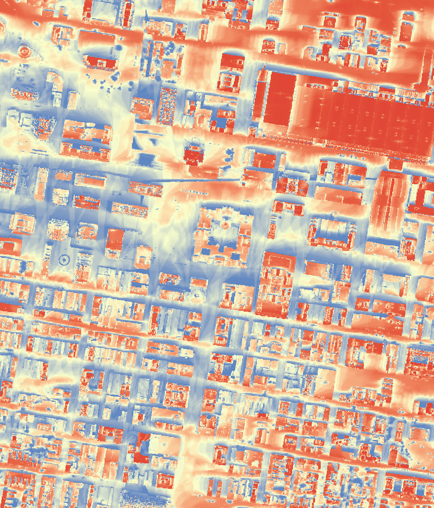

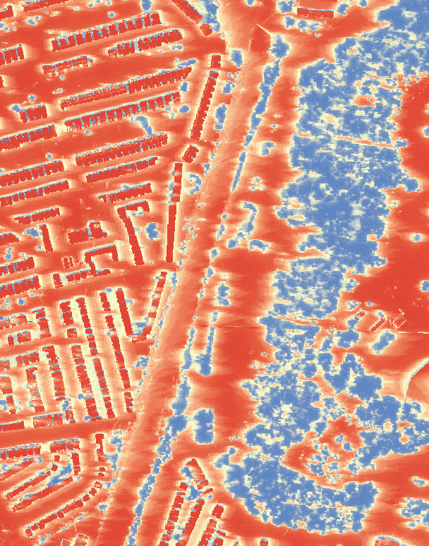
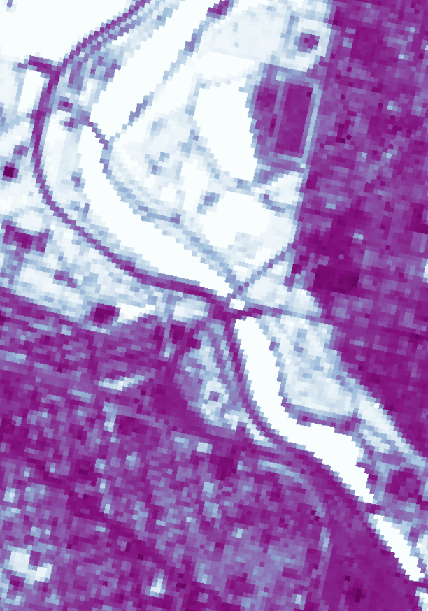


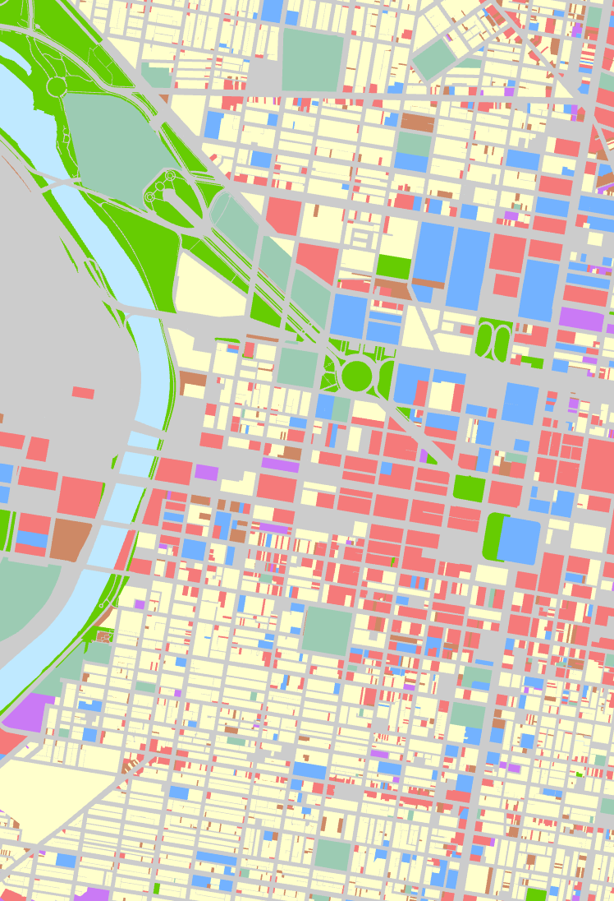


数据来源：城市热数据：
https://xiaojianggis.github.io/pedheat/
不透水地表数据：
https://www.mrlc.gov/downloads/sciweb1/shared/mrlc/data-bundles/Annual_NLCD_FctImp_2024_CU_C1V1.zip
土地利用数据：
https://catalog.dvrpc.org/dataset/land-use-2023
团队将野生动物活动数据与建成环境数据进行空间连接，以支持联合分析。每个相机点位均完成地理定位，并围绕点位建立缓冲区以刻画周边环境背景。在缓冲区内提取关键建成环境变量并汇总为定量指标。经多种距离测试后，我们最终采用 300 米缓冲区作为数据采集范围。
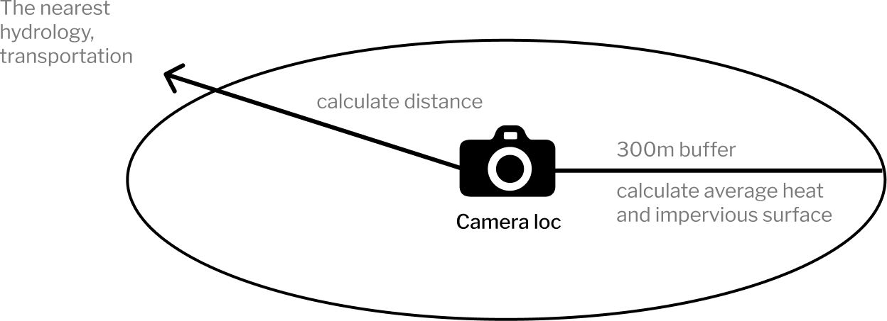
正在加载图表…
全部出现记录的物种频次显示出高度不均衡结构。Eastern Gray Squirrels 占全部记录约 50%，其后为 Common Raccoons 和 Red Foxes（约 14%），以及 White-tailed Deer（约 9%）。
Eastern Gray Squirrels 的优势地位与费城城市生态结构相一致。破碎化绿地与邻人类生境为其提供了条件，而该物种适应性强，能在城市环境中维持较高种群密度。
Common Raccoons 与 Red Foxes 均为机会主义物种，能够利用边缘生境与人类改造景观。其较高占比说明它们在城郊生态位中已形成稳定存在。White-tailed Deer 通常与更大尺度郊区保育地或扰动较低的绿色廊道相关。
从整体上看，数据集以哺乳动物为主，占全部记录的 95%。这也反映出运动触发相机天然更容易捕捉地栖哺乳动物，而鸟类较少触发传感器或在镜头内停留足够时间被记录。
正在加载图表…
野生动物出现呈现明显双峰模式，峰值分别在早上 8 点与下午 5 点。若与费城 10 月平均日出（约 7 点）和日落（约 6 点）对照，这两个峰值均落在晨昏时段前后一小时窗口内。
这表明野生动物活动高度集中于黎明与黄昏过渡期，此时不同节律物种发生重叠。换言之，昼行性与夜行性物种都会在该窗口活跃，从而形成总体出现量收敛。
正在加载图表…
浣熊、狐狸与鹿类白天活动减少，可理解为其对城市与城郊人类干扰的行为适应。[23] 这种时间分割也有助于降低物种间竞争，并支持其在共享城市绿地中共存。[24]
为避免对野生动物造成额外干扰，相机点位精确坐标不对外公开。本文按纬度由北到南顺序展示 13 个点位。
正在加载图表…
各点位野生动物出现差异显著。多数相机在白天记录占比超过 60%，部分点位白天占比高达 95%，且通常由 Eastern Gray Squirrels 主导。
相比之下，2 号与 13 号点位夜间记录占比超过 60%，并以浣熊、鹿等夜行哺乳动物为主。值得注意的是，这些点位对应更大、扰动更低的自然或保育区域。
总体上，这一对比说明：
正在加载图表…
拍摄频次可作为整体活动强度的代理指标。最高活动水平约为每天 12 次，出现在大型保育区点位；最低仅约每天 1 次，多见于人类干扰较强点位。
该模式表明人类干扰与野生动物活动强度之间存在明显负相关，符合既有城市生态学理论。[23]
正在加载图表…
各点位物种丰富度差异显著。最丰富点位记录到 21 个物种，位于大型连续自然区域（如森林谷地系统），可能受益于更高生境多样性。
相反，最低点位仅记录到 3 个物种，位于高人类活动区域，且以哺乳动物为主，说明在此类条件下仅最具适应性的物种能够持续存在。
出现次数
0
频次
0
记录天数
0
丰富度（物种数）
0
正在加载看板数据…
我们进一步考察了每个相机点位的五项建成环境变量。虽然整体关系尚不明显（部分受点位数量与采样规模限制），但 7 号点位提供了一个典型案例：其拍摄频次最低（约 1 次/天）。结合环境特征，可提出与生态学预期一致的假设：在以下条件下，野生动物活动可能降低：
我们测试了线性模型、GLMM（在非正态响应与随机效应下扩展线性模型）和 GAMM（在随机效应下允许非线性平滑关系）。由于 MEAN_IMP（不透水地表）是唯一持续显著且表现出非线性迹象的预测变量，我们最终采用 GAMM 框架刻画其平滑效应。
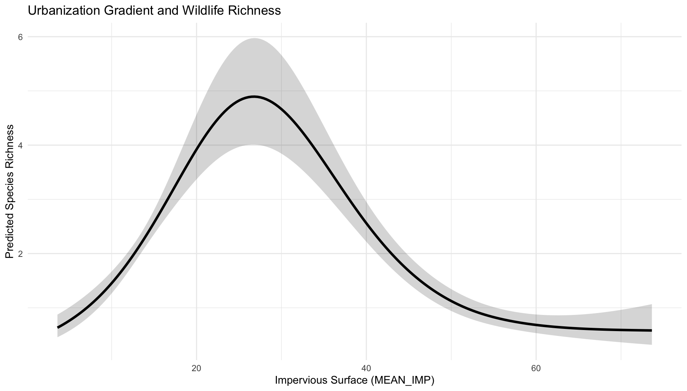
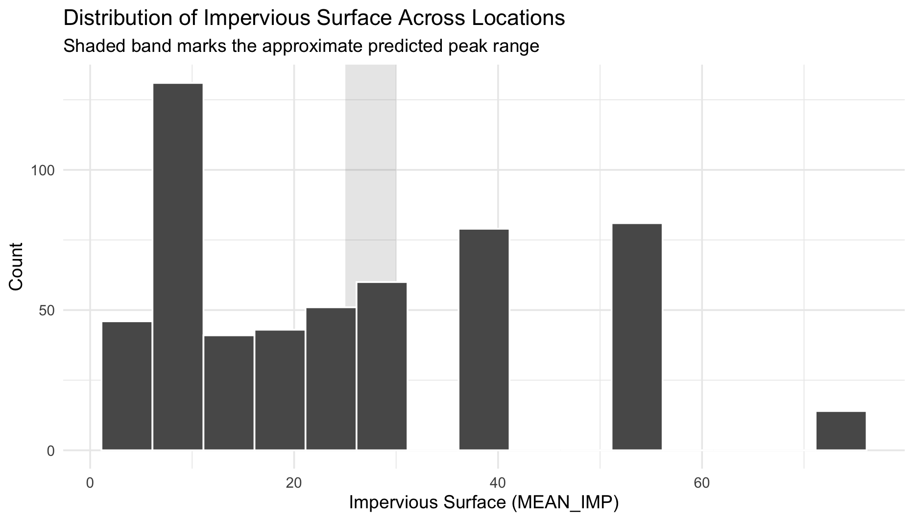
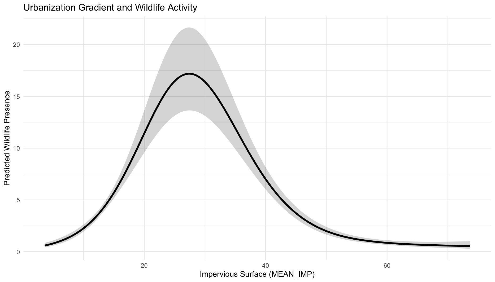
（1）城市化（MEAN_IMP）的非线性效应
两个模型均显示不透水地表与野生动物之间存在高度显著的非线性关系（p < 0.001）。
（2）两个模型方向一致
（3）其他变量效应
在两个模型中，以下变量均显著：
总体上，结果表明城市化并非对野生动物“线性有害”，而是：
不透水地表与野生动物出现/丰富度之间的驼峰关系，可能部分由常见物种 Eastern Gray Squirrels 的优势（约占观测 47–50%）所驱动。该发现总体与中度干扰假说（Intermediate Disturbance Hypothesis, IDH）一致，即中等干扰水平下物种多样性最高。[25]
Eastern Gray Squirrels 对城市-自然混合环境适应性较强，该环境中树木覆盖、食物资源与中等人类活动并存。因此，其活动常在中等城市化水平下达到峰值，与约 25–30% 不透水地表对应的预测峰值高度吻合。
但该模式不应仅归因于松鼠。出现量与丰富度模型均呈现一致驼峰曲线，说明这可能是更广义生态信号，或反映了能同时容纳耐城市化物种与较低干扰耐受物种的郊区/边缘生境。
从这一角度看，松鼠优势可能放大了观测模式，但底层关系更可能代表一般性的城乡生态梯度。
本研究提供了初步证据：费城城市野生动物格局由物种组成、时间行为与城市化梯度共同塑造。
虽然该模式部分受松鼠等耐城市化物种优势影响，但其在不同模型中的一致性指向更广义的城乡生态梯度。考虑到样本规模有限（13 个相机点位），这些发现更应被视为探索性结果与假设生成依据。
这些发现表明，城市野生动物可能从中间型城市景观的策略性设计中受益。
1. 优先营造混合生境
2. 提升生境连通性
3. 缓解高强度区域城市压力源
4. 在人类主导空间中进行共存导向设计
总体而言，尽管这些发现仍属初步，但它们强调：城市生物多样性并非简单取决于“更多自然”，而在于自然环境与建成环境之间的恰当平衡。围绕这一平衡开展设计，是支撑韧性城市生态系统的关键。
引言部分的三张图片来源于 Unsplash，并依据 Unsplash License.
运动触发相机相关图片来自以下合作项目： 城市自然可达性倡议（Accessing Urban Nature Initiative） （AUNI）与 城市野生动物信息网络（Urban Wildlife Information Network） (UWIN).
部分图标改编自 Alibaba Iconfont ，并按平台许可条款使用。
数据来源：
OpenStreetMap: https://www.openstreetmap.org/
OpenDataPhilly: https://opendataphilly.org
城市热数据： https://xiaojianggis.github.io/pedheat/
不透水地表数据： https://www.mrlc.gov/downloads/sciweb1/shared/mrlc/data-bundles/Annual_NLCD_FctImp_2024_CU_C1V1.zip
土地利用数据： https://catalog.dvrpc.org/dataset/land-use-2023
使用工具：
数据分析：RStudio
网页设计与开发：Visual Studio Code、Figma、Codex
网站部署与托管：GitHub Pages 与 Vercel